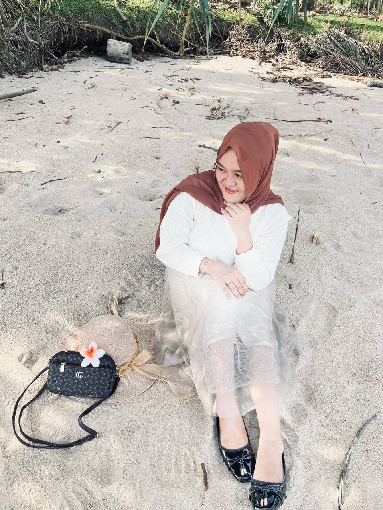

Tentang Saya
Yolanda Khairunisa
F0E023050
Selamat datang di website beaker glass.Saya adalah seorang mahasiswa dengan hasrat mendalam terhadap presisi dan inovasi dalam dunia laboratorium. Website ini saya buat untuk berbagi pengetahuan mengenai salah satu alat yang sering digunakan di laboratorium, gelas beaker.Saya percaya bahwa pemahaman yang baik terhadap alat adalah kunci dari praktikum yang sukses.